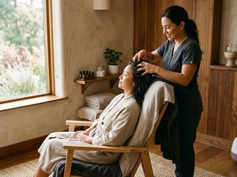

Thai massage in Hillhead is within easy reach for anyone living or studying in this vibrant corner of Glasgow's West End.
Hillhead sits north of Kelvingrove Park and south of the River Kelvin. It centres on the independent shops, cafes, and leafy tenement streets along Byres Road. The area draws students, academics, creative professionals, and long-term residents who value its relaxed pace.
Serendipity Massage Therapy & Wellness is based on Hope Street in Glasgow City Centre. It's a short subway ride from Hillhead. Students grinding through deadlines, academics hunched over screens, and creatives whose shoulders haven't dropped in weeks all benefit from a structured session with a trained therapist.

Hillhead takes wellness seriously. The food culture, easy access to Kelvingrove Park, and active street life point to a community that invests in its health. Serendipity fits that well. We offer results-focused massage from a professional team trained to a consistent standard.
Serendipity offers a full range of massage treatments. Each one is delivered by a trained therapist using techniques developed by head therapist Jariya Malone. Whether you're managing muscle tension, recovering from sport, or need genuine rest, there's a treatment to suit.
The Glasgow Subway makes the journey from Hillhead simple. Hillhead station on Byres Road puts you straight on the network, with trains every five minutes. Take the subway to Buchanan Street, then walk six minutes to Central Chambers, 93 Hope Street.
Several bus routes also link Hillhead to the city centre. Services along Great Western Road and Sauchiehall Street drop you within easy walking distance of Hope Street. The full journey is usually under 25 minutes door to door.
Serendipity is not a sole trader or a chain spa. It's a professional team studio where every therapist works to the same standard. All are trained in techniques developed by Jariya Malone. You can book your session online and trust the quality — whether it's your first visit or your twentieth.
For Hillhead residents dealing with postural strain from desk work, or the physical demands of an active lifestyle near Kelvingrove Park, a regular session at Serendipity offers real relief. Not just an hour off.
Hillhead sits at the heart of Glasgow's West End, bounded by Byres Road, Kelvingrove Park, and the River Kelvin. The University of Glasgow shapes its character. Ashton Lane and the streets around it add a lively social scene built on independent businesses. For more on the area's history, see Hillhead on Wikipedia.
Serendipity Massage Therapy & Wellness is based at Central Chambers, 93 Hope Street, Glasgow G2 6LD. From Hillhead, take the subway from Hillhead station on Byres Road to Buchanan Street. That's around six minutes' walk from the studio. The total journey is typically under 25 minutes.
The subway is the most reliable option. Hillhead station is on Byres Road and trains run every five minutes. Take the subway to Buchanan Street or St Enoch — both are a short walk from Hope Street. Several bus routes along Great Western Road and Sauchiehall Street also connect Hillhead to the city centre.
Yes. Serendipity accepts same-day bookings subject to availability. The easiest way to check is through the online booking page, which shows live availability. Booking ahead is recommended, especially for evenings and weekends when demand is higher.
Traditional Thai massage works well for anyone carrying tension from long hours at a screen. It uses acupressure and assisted stretching to release deep muscle tension and improve range of motion. It targets the neck, shoulder, and back tightness that builds up through the week. Thai oil massage is a strong alternative if you prefer a more flowing, relaxing approach.
Serendipity Massage Therapy & Wellness offers appointments throughout the week, including evening and weekend slots. For current hours and to find a time that suits you, visit the booking page or call the studio on 0141 673 6630.